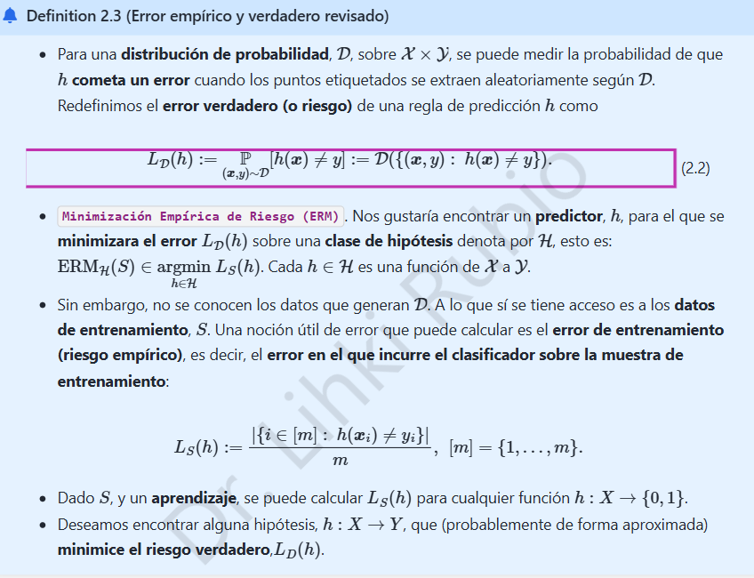

1. K-NN · Riesgo verdadero y empírico

1.1 ¿Qué se debe justificar?
La definición 2.3 representa el riesgo verdadero como la probabilidad de una clasificación equivocada y el riesgo empírico como el porcentaje de errores sobre una muestra etiquetada. Demostraremos ambas equivalencias. Añadiremos la propiedad de insesgadez solo para un clasificador fijo, una precisión metodológica importante.
Sea \(\mathcal D\) una distribución de probabilidad sobre pares \((X,Y)\), con \(X\in\mathcal X\) y \(Y\in\mathcal Y\). Un clasificador \(h:\mathcal X\to\mathcal Y\) predice una etiqueta \(h(x)\).
1.2 Riesgo verdadero
Definamos el evento de clasificación incorrecta \(A_h=\{(x,y):h(x)\ne y\}\) y la pérdida 0–1
La esperanza de una indicadora es la probabilidad del evento que representa. Por ello,
Esta expresión no depende del conjunto concreto de entrenamiento: mide el desempeño esperado en la población modelada por \(\mathcal D\).
1.3 Riesgo empírico
Dada una muestra etiquetada \(S=\{(x_i,y_i)\}_{i=1}^m\), el número total de equivocaciones es la suma de indicadores. Por tanto,
Esta cantidad sí se puede calcular con los ejemplos observados, aunque la distribución \(\mathcal D\) sea desconocida. Minimización empírica del riesgo significa buscar \(\hat h\in\arg\min_{h\in\mathcal H}L_S(h)\) dentro de una clase de hipótesis \(\mathcal H\).
1.4 Relación entre ambos riesgos y condición importante
Supongamos que \(S\sim\mathcal D^m\) consiste en observaciones independientes e idénticamente distribuidas y que \(h\) se fijó sin utilizar \(S\). Entonces, por linealidad de la esperanza,
Así, para \(h\) fijo, \(L_S(h)\) es un estimador insesgado de \(L_{\mathcal D}(h)\), y por independencia su varianza es \(L_{\mathcal D}(h)[1-L_{\mathcal D}(h)]/m\).
Precisión: si se escoge \(h\) minimizando errores sobre esa misma muestra, la igualdad de insesgadez no se deduce automáticamente: la selección produce optimismo del error de entrenamiento. Esta es la razón de reservar datos independientes para evaluar modelos.
1.5 Conexión con el clasificador óptimo de Bayes
Si \(Y\in\{0,1\}\) y \(\eta(x)=\mathbb P(Y=1\mid X=x)\), el riesgo condicionado al punto \(x\) es \(\eta(x)\) si predecimos 0 y \(1-\eta(x)\) si predecimos 1. El mínimo de ambos se logra mediante
Luego,
para cualquier clasificador \(h\). Esta identidad es la referencia que utilizaremos en el capítulo siguiente.
Conclusión: el riesgo empírico describe los errores observados; el verdadero describe los errores esperados. Ambos se escriben con la pérdida 0–1, pero no deben confundirse.